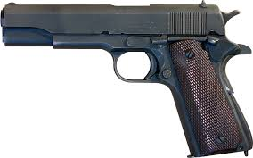
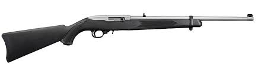
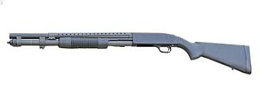
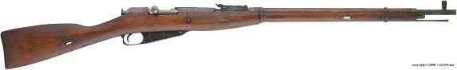

I have shot many different guns throughout my life while never owning one or having one in my house.
The gun that I have shot the most would most likely be my grandfather's double barrel rifle that has a top barrel that shoots a .22 round and the bottom barrel shoots a 20 gauge shotgun round. This gun is a great gun because it holds a lot of utility. It can get small game with a .22 or a 20 gauge buckshot. It can also shoot big game like deer with a 20 gauge slug round. It is also a very reliable and acurate gun that has never failed me all the times I have used it and it was most likely the first gun that I have ever shot.
The shotgun that I have found the most fun shooting is my grandfather's 20 gauge pump action. This is a fun gun because it has an extremely short barrel and does not have a stock. This gun is shot by guessing where you are aiming from the hip. The 20 gauge rounds are easy to control and due to the short barrel, it can only hold three rounds at a maximum in the barrel. The rifle that I have had the most fun shooting is my grandfather's AR-15. I have had a good time shootig with my grandfather's AR-15 because it is an accurate and fairly easy gun to use. His AR-15 has a thirty round magazine that even when half filled, can last for a little bit if I am shooting for accuracy instead of fast shooting. The two handguns that I have had the most fun shooting are my uncle's Colt 1911 and my grandfather's .22 caliber revolver. The Colt 1911 is one of my favorite guns and while not holding as many rounds as a glock or other 9mm handguns, it packs a big punch with its 45 acp rounds. The .22 revolver is a remake of a Civil War revolver to be used with .22 rounds. The gun is easy to handle and when I am with my grandpa at our family property in Martinsburg, MO, he lets me kep it for the time we are up there and I walk around with it on my belt. The revolver is overall a fun gun to use and is reasonably accurate for a handgun shooting .22 rounds.
| Guns I Want | Picture | Price | Why I Want The Gun |
|---|---|---|---|
| Colt 1911 |  | $800 to $1000 | The Colt 1911 has a lot of historical significance. The handgun has been called one of the best handguns ever made. It shoots 45 acp bullets that are bigger than a common handgun round, 9mm. The Colt 1911 is a very sturdy gun that is reliable and will pack a punch. |
| Ruger 10/22 |  | $200 to $400 | The Ruger 10/22 is a semi-automatic rifle that shoots .22 caliber bullets. The .22 bullets are small and easy to shoot while being one of the cheaper types of amunition. The Ruger 10/22 is a reliable gun that is an easy gun to own and use for both small game hunting or recreational use. |
| Mossberg 500 |  | $300 to $400 | The Mossberg 500 is a pump shotgun that shoots a 12 gauge round. Multiple types of 12 gauge rounds can be used in the Mossberg 500, like buckshot and slug. The Mossberg is a reliable shotgun that can be used for both hunting and recreation. |
| Mosin Nagant |  | $200 to $300 | The Mosin is a World War Two Russian botl action infantry rifle. There are still many available for purchase and while they are not the greatest bolt action rifle, they are fun to shoot and are cheaper than most rifles that shoot bigger than a .22 round while still ahving historical significance. |